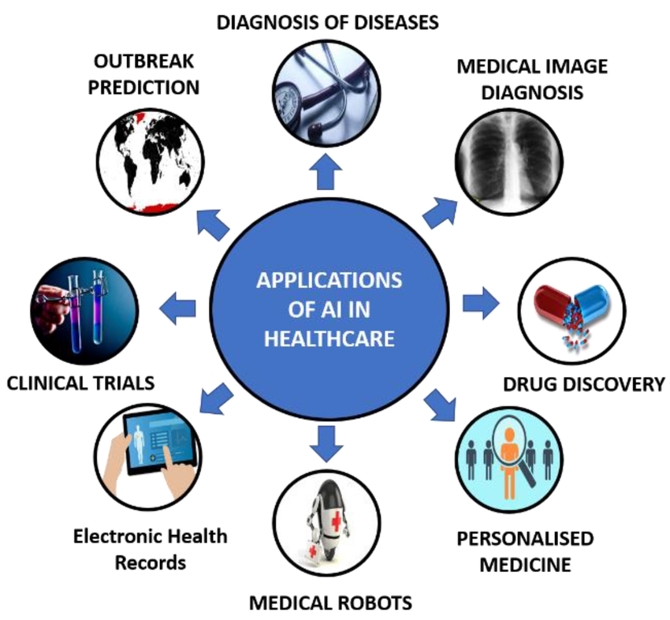

Published on January 10, 2025 | By Admin
Artificial Intelligence (AI) has shifted from being a futuristic dream to a powerful reality that is reshaping nearly every industry. It’s no longer just about robots or science fiction—it’s about creating smarter systems that can learn, adapt, and even make decisions.
The Current State of AI
Right now, AI is already part of our everyday lives. Voice assistants like Siri and Alexa understand our commands, Netflix recommends shows, and Google Maps predicts traffic before we even leave home. Businesses use AI-powered analytics for smarter decisions, while doctors use AI tools for faster and more accurate disease detection.
Even outside of tech, industries like agriculture and retail are seeing disruption. Farmers deploy AI-powered drones to monitor crops, retailers use chatbots for 24/7 support, and construction companies leverage AI-driven project planning for cost savings.
Opportunities Ahead
The potential for AI in the coming decade is immense. Some of the most exciting opportunities include:
- Healthcare: Personalized medicine, AI drug discovery, and faster diagnostics for critical illnesses.
- Education: Smart learning platforms adapting to each student’s pace and style.
- Smart Cities: AI-driven energy optimization, traffic management, and waste reduction.
- Climate Change: Weather simulations, deforestation monitoring, and sustainable energy innovations.
Did You Know?
According to PwC, AI could contribute $15.7 trillion to the global economy by 2030—making it the biggest commercial opportunity in today’s economy.
Challenges to Overcome
With great power comes great responsibility. AI carries risks such as bias in decision-making, privacy concerns, and job automation. Policymakers, tech leaders, and society must collaborate to set ethical boundaries and ensure transparency.
“The real question is not whether machines think but whether men do.” — B.F. Skinner
AI Trends to Watch in 2025 and Beyond
- Generative AI: Creating art, music, and even films with human-like quality.
- Explainable AI (XAI): Making decisions more transparent and understandable.
- AI in Cybersecurity: Real-time threat detection and prevention.
- AI & Human Collaboration: Machines working alongside humans, not replacing them.
- AI-Powered Robotics: Smarter robots in manufacturing, healthcare, and even homes.

FAQs About AI
Conclusion
Artificial Intelligence is not just a technology—it’s a transformation. It will continue to change how we live, work, and connect. While challenges like ethics and job displacement exist, the opportunities far outweigh the risks. The future of AI is about collaboration, not replacement.
Back to Home